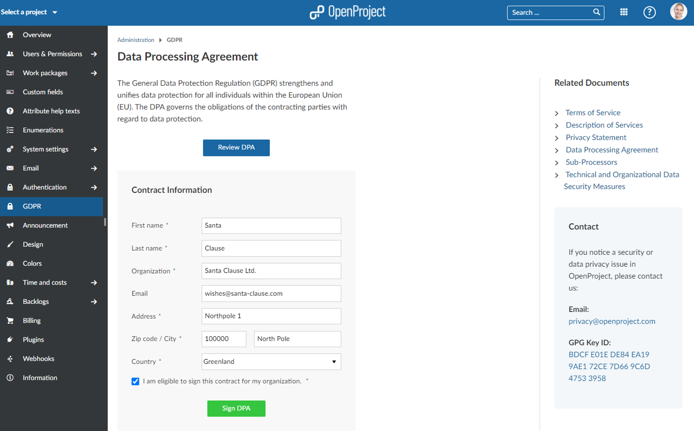

Release date: 2020-12-17
We released OpenProject 11.1.0. This new release will bring many new features and bug fixes that will improve classical as well as agile project management.
The styling of texts, headlines, tables, the layout of the table of contents, and much more have been improved in the WYSIWYG text editor. This applies not only to wiki pages but also for other text fields, e.g. the description of work packages. To achieve these improvements, we have, among other things, updated the CK Editor 5 to version 23.0.0.
While editing a work package comment and @-notify someone, the user name will now directly be displayed even in the edit mode. This way, it’s much more convenient to notify the correct team member.
With OpenProject 11.1 users are now able to aggregate milestones for projects in the Gantt chart in one single row. When grouped by projects, the rows can be collapsed with the collapse all button and the project milestones are still visible in one row. This way, you easily get a high level overview of all important due dates in a project.
In the work package list it is possible to group by any attribute, e.g. assignee, status, priority or type. Now, once grouped by an attribute, you will have a collapse all button on top of the work packages list to close and open all attributes within a group at once.
For EU customers it is required by the GDPR to sign a data processing agreement (sometimes called data processing addendum) before using our Cloud edition. Until now, we processed these contracts manually. Users had to print the document, enter their information and send it to us. We then had to sign it too, and send it back to the customer.
Luckily, we now automated this process in order to reduce manual effort on both sides. This way, it is even easier to comply with GDPR. Within -> Administration -> GDPR you can now online review and sign your DPA document with us.

Furthermore, we have extended the authentication profile with an OpenID Connect provider. Also, the printing, e.g. for wiki pages, has been optimized via the browser print function.
There are a lot more things we packed into 11.1 to tell you about.
To use OpenProject 11.1 right away, create an instance and test 14 days for free in the Cloud.
Prefer to run OpenProject 11.1 in your own infrastructure? Here you can find the Installation guidelines for OpenProject.
Want to upgrade from your self-managed Community version to try out the Enterprise premium features? Get a 14 days free trial token directly out of your current Community installation.
Navigate to the -> Administration-> Enterprise Edition and request your trial token.
Follow the upgrade guide for the packaged installation or Docker installation to update your OpenProject installation to OpenProject 11.0. Please note the blue box on top of the page.
We update the hosted OpenProject environments (Enterprise Cloud) automatically.
Special thanks go to all OpenProject contributors without whom this release would not have been possible:
All the developers, designers, project managers who have contributed to OpenProject 11.1.
The City of Cologne for sponsoring some of the open source features and thus contributing them to the Community.
Every dedicated user who has created feature request, reported bugs for 11.1 and also supported the community by asking and answering questions in the forum.
All the engaged users who provided translations on CrowdIn.
Special thanks for reporting and finding bugs go to:
Gio @ Enuan, Klaas van Thoor, Paul Kernstock, Rainer Proehl
We are continuously developing new features and improvements for OpenProject. If you’d like to preview what’s coming in the next release, be sure to check out our development roadmap.